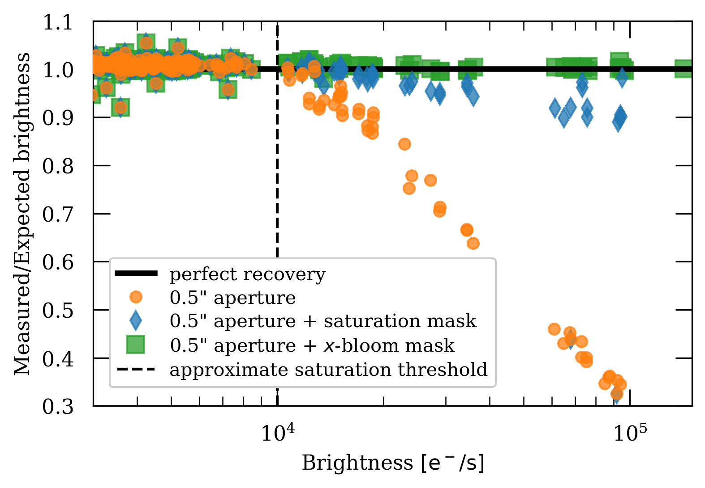

ACS Linearity with Saturated Stars#
Introduction#
The ACS/WFC CCD becomes saturated around 80000 counts. When this occurs, excess charge from the source spills out lengthwise along the columns of the CCD. This can lead to issues with photometry when using very bright stars, since a significant portion of the star’s flux may fall outside of a reasonable extraction radius.
However, accurate relative photometry can be obtained as long as a large enough aperture is selected to contain the spilled flux (ACS ISR 2004-01). While one could simply use a larger circular aperture, that may introduce error when working with a crowded field (where bright stars are often located).
Here we present a method to identify and perform photometry on saturated sources by defining a custom aperture that is a combination of a standard 0.5” arcsecond circular aperture and the pixels affected by saturation trails. This method has been tested on ACS/WFC observations of 47 Tuc in the F606W band. The plot below shows the results of using this alternative method to recover flux.
{kind=link}
This tutorial will show you how to…#
1. Prepare Images#
Apply Pixel Area Map
Separate by long and short exposure
Make sure you have images of the same field
2. Identify Saturated Stars#
Identify the saturated pixels using the data quality (DQ) array
Determine whether or not the saturation trails extend significantly away from the target
3. Bleed the Saturation Mask#
Construct a convolution kernel
Bleed the saturation mask with the convolution kernel
4. Define a Custom Aperture#
Isolate central clump from your saturation mask
Obtain circular aperture as a boolean mask
Combine circular aperture with saturation mask
5. Photometry with a Custom Aperture#
Extract counts with the custom aperture
Estimate background to be subtracted
5. Additional Results#
A worked example with several stars
Imports#
Here we list the Python packages used in this notebook. Links to the documentation for each module is provided for convenience.
Package Name |
module |
docs |
used for |
|---|---|---|---|
|
|
command line input |
|
|
|
remove directory tree |
|
|
|
construct array slice object |
|
|
|
plotting |
|
|
|
download data from MAST |
|
|
|
access and update fits files |
|
|
|
constructing and editing in a tabular format |
|
|
|
sigma clipping image for background estimation |
|
|
|
convolve saturation mask with kernel |
|
|
|
obtain pixel area maps (PAM) |
|
|
|
aperture object for photometry |
|
|
|
draw circle on a plot |
import os
import shutil
import numpy as np
import matplotlib.pyplot as plt
from astroquery.mast import Observations
from astropy.io import fits
from astropy.table import Table, unique
from astropy.stats import sigma_clip
from scipy.signal import convolve2d
from stsci.skypac import pamutils
from photutils import CircularAperture
from matplotlib.patches import Circle
from p_module import plot
The following task in the stsci.skypac package can be run with TEAL:
skymatch
/tmp/ipykernel_2281/4207899963.py:16: DeprecationWarning: `photutils.CircularAperture` is a deprecated alias for `photutils.aperture.CircularAperture` and will be removed in the future. Instead, please use `from photutils.aperture import CircularAperture` to silence this warning.
from photutils import CircularAperture
Here we set environment variables for later use with the Calibration Reference Data System (CRDS).
os.environ['CRDS_SERVER_URL'] = 'https://hst-crds.stsci.edu'
os.environ['CRDS_SERVER'] = 'https://hst-crds.stsci.edu'
os.environ['CRDS_PATH'] = './crds_cache'
os.environ['jref'] = './crds_cache/references/hst/acs/'
Download the Data#
Here we download all of the data required for this notebook. This is an important step! Some of the image processing steps require all relevant files to be in the working directory. We recommend working with a brand new directory for every new set of data.
GO Proposal 14949: “ACS External CTE Monitor”#
Using the python package astroquery, we can download files from the MAST archive.
obs_table = Observations.query_criteria(proposal_id=14949, filters='F606W')
dl_table = Observations.download_products(obs_table['obsid'], project=['CALACS'],
productSubGroupDescription=['FLC'],
mrp_only=False)
unique_table = unique(dl_table, keys='Local Path')
Downloading URL https://mast.stsci.edu/api/v0.1/Download/file?uri=mast:HST/product/jdg301bwq_flc.fits to ./mastDownload/HST/jdg301bwq/jdg301bwq_flc.fits ...
[Done]
Downloading URL https://mast.stsci.edu/api/v0.1/Download/file?uri=mast:HST/product/jdg301byq_flc.fits to ./mastDownload/HST/jdg301byq/jdg301byq_flc.fits ...
[Done]
Downloading URL https://mast.stsci.edu/api/v0.1/Download/file?uri=mast:HST/product/jdg301c4q_flc.fits to ./mastDownload/HST/jdg301c4q/jdg301c4q_flc.fits ...
[Done]
Downloading URL https://mast.stsci.edu/api/v0.1/Download/file?uri=mast:HST/product/jdg301c6q_flc.fits to ./mastDownload/HST/jdg301c6q/jdg301c6q_flc.fits ...
[Done]
Downloading URL https://mast.stsci.edu/api/v0.1/Download/file?uri=mast:HST/product/jdg302ctq_flc.fits to ./mastDownload/HST/jdg302ctq/jdg302ctq_flc.fits ...
[Done]
Downloading URL https://mast.stsci.edu/api/v0.1/Download/file?uri=mast:HST/product/jdg303d5q_flc.fits to ./mastDownload/HST/jdg303d5q/jdg303d5q_flc.fits ...
[Done]
Downloading URL https://mast.stsci.edu/api/v0.1/Download/file?uri=mast:HST/product/jdg303d7q_flc.fits to ./mastDownload/HST/jdg303d7q/jdg303d7q_flc.fits ...
[Done]
Downloading URL https://mast.stsci.edu/api/v0.1/Download/file?uri=mast:HST/product/jdg302cvq_flc.fits to ./mastDownload/HST/jdg302cvq/jdg302cvq_flc.fits ...
[Done]
Downloading URL https://mast.stsci.edu/api/v0.1/Download/file?uri=mast:HST/product/jdg302cxq_flc.fits to ./mastDownload/HST/jdg302cxq/jdg302cxq_flc.fits ...
[Done]
Downloading URL https://mast.stsci.edu/api/v0.1/Download/file?uri=mast:HST/product/jdg302czq_flc.fits to ./mastDownload/HST/jdg302czq/jdg302czq_flc.fits ...
[Done]
Downloading URL https://mast.stsci.edu/api/v0.1/Download/file?uri=mast:HST/product/jdg301ccq_flc.fits to ./mastDownload/HST/jdg301ccq/jdg301ccq_flc.fits ...
[Done]
Downloading URL https://mast.stsci.edu/api/v0.1/Download/file?uri=mast:HST/product/jdg301ceq_flc.fits to ./mastDownload/HST/jdg301ceq/jdg301ceq_flc.fits ...
[Done]
Downloading URL https://mast.stsci.edu/api/v0.1/Download/file?uri=mast:HST/product/jdg302clq_flc.fits to ./mastDownload/HST/jdg302clq/jdg302clq_flc.fits ...
[Done]
Downloading URL https://mast.stsci.edu/api/v0.1/Download/file?uri=mast:HST/product/jdg302cnq_flc.fits to ./mastDownload/HST/jdg302cnq/jdg302cnq_flc.fits ...
[Done]
Downloading URL https://mast.stsci.edu/api/v0.1/Download/file?uri=mast:HST/product/jdg303dlq_flc.fits to ./mastDownload/HST/jdg303dlq/jdg303dlq_flc.fits ...
[Done]
Downloading URL https://mast.stsci.edu/api/v0.1/Download/file?uri=mast:HST/product/jdg303dnq_flc.fits to ./mastDownload/HST/jdg303dnq/jdg303dnq_flc.fits ...
[Done]
Downloading URL https://mast.stsci.edu/api/v0.1/Download/file?uri=mast:HST/product/jdg303d9q_flc.fits to ./mastDownload/HST/jdg303d9q/jdg303d9q_flc.fits ...
[Done]
Downloading URL https://mast.stsci.edu/api/v0.1/Download/file?uri=mast:HST/product/jdg303dbq_flc.fits to ./mastDownload/HST/jdg303dbq/jdg303dbq_flc.fits ...
[Done]
INFO: Found cached file ./mastDownload/HST/jdg301bwq/jdg301bwq_flc.fits with expected size 168330240. [astroquery.query]
INFO: Found cached file ./mastDownload/HST/jdg301byq/jdg301byq_flc.fits with expected size 168330240. [astroquery.query]
INFO: Found cached file ./mastDownload/HST/jdg301c4q/jdg301c4q_flc.fits with expected size 168330240. [astroquery.query]
INFO: Found cached file ./mastDownload/HST/jdg301c6q/jdg301c6q_flc.fits with expected size 168330240. [astroquery.query]
INFO: Found cached file ./mastDownload/HST/jdg301ccq/jdg301ccq_flc.fits with expected size 168330240. [astroquery.query]
INFO: Found cached file ./mastDownload/HST/jdg301ceq/jdg301ceq_flc.fits with expected size 168330240. [astroquery.query]
INFO: Found cached file ./mastDownload/HST/jdg303d5q/jdg303d5q_flc.fits with expected size 168330240. [astroquery.query]
INFO: Found cached file ./mastDownload/HST/jdg303d7q/jdg303d7q_flc.fits with expected size 168330240. [astroquery.query]
INFO: Found cached file ./mastDownload/HST/jdg303d9q/jdg303d9q_flc.fits with expected size 168330240. [astroquery.query]
INFO: Found cached file ./mastDownload/HST/jdg303dbq/jdg303dbq_flc.fits with expected size 168330240. [astroquery.query]
INFO: Found cached file ./mastDownload/HST/jdg303dlq/jdg303dlq_flc.fits with expected size 168215040. [astroquery.query]
INFO: Found cached file ./mastDownload/HST/jdg303dnq/jdg303dnq_flc.fits with expected size 168215040. [astroquery.query]
INFO: Found cached file ./mastDownload/HST/jdg302clq/jdg302clq_flc.fits with expected size 168330240. [astroquery.query]
INFO: Found cached file ./mastDownload/HST/jdg302cnq/jdg302cnq_flc.fits with expected size 168330240. [astroquery.query]
INFO: Found cached file ./mastDownload/HST/jdg302ctq/jdg302ctq_flc.fits with expected size 168330240. [astroquery.query]
INFO: Found cached file ./mastDownload/HST/jdg302cvq/jdg302cvq_flc.fits with expected size 168330240. [astroquery.query]
INFO: Found cached file ./mastDownload/HST/jdg302cxq/jdg302cxq_flc.fits with expected size 168330240. [astroquery.query]
INFO: Found cached file ./mastDownload/HST/jdg302czq/jdg302czq_flc.fits with expected size 168330240. [astroquery.query]
We’ll use the package os to put all of these files in our working directory for convenience.
for row in unique_table:
oldfname = row['Local Path']
unique_fname = np.unique(oldfname)
newfname = os.path.basename(oldfname)
print(row)
os.rename(oldfname, newfname)
Local Path Status Message URL
----------------------------------------------- -------- ------- ----
./mastDownload/HST/jdg301bwq/jdg301bwq_flc.fits COMPLETE None None
Local Path Status Message URL
----------------------------------------------- -------- ------- ----
./mastDownload/HST/jdg301byq/jdg301byq_flc.fits COMPLETE None None
Local Path Status Message URL
----------------------------------------------- -------- ------- ----
./mastDownload/HST/jdg301c4q/jdg301c4q_flc.fits COMPLETE None None
Local Path Status Message URL
----------------------------------------------- -------- ------- ----
./mastDownload/HST/jdg301c6q/jdg301c6q_flc.fits COMPLETE None None
Local Path Status Message URL
----------------------------------------------- -------- ------- ----
./mastDownload/HST/jdg301ccq/jdg301ccq_flc.fits COMPLETE None None
Local Path Status Message URL
----------------------------------------------- -------- ------- ----
./mastDownload/HST/jdg301ceq/jdg301ceq_flc.fits COMPLETE None None
Local Path Status Message URL
----------------------------------------------- -------- ------- ----
./mastDownload/HST/jdg302clq/jdg302clq_flc.fits COMPLETE None None
Local Path Status Message URL
----------------------------------------------- -------- ------- ----
./mastDownload/HST/jdg302cnq/jdg302cnq_flc.fits COMPLETE None None
Local Path Status Message URL
----------------------------------------------- -------- ------- ----
./mastDownload/HST/jdg302ctq/jdg302ctq_flc.fits COMPLETE None None
Local Path Status Message URL
----------------------------------------------- -------- ------- ----
./mastDownload/HST/jdg302cvq/jdg302cvq_flc.fits COMPLETE None None
Local Path Status Message URL
----------------------------------------------- -------- ------- ----
./mastDownload/HST/jdg302cxq/jdg302cxq_flc.fits COMPLETE None None
Local Path Status Message URL
----------------------------------------------- -------- ------- ----
./mastDownload/HST/jdg302czq/jdg302czq_flc.fits COMPLETE None None
Local Path Status Message URL
----------------------------------------------- -------- ------- ----
./mastDownload/HST/jdg303d5q/jdg303d5q_flc.fits COMPLETE None None
Local Path Status Message URL
----------------------------------------------- -------- ------- ----
./mastDownload/HST/jdg303d7q/jdg303d7q_flc.fits COMPLETE None None
Local Path Status Message URL
----------------------------------------------- -------- ------- ----
./mastDownload/HST/jdg303d9q/jdg303d9q_flc.fits COMPLETE None None
Local Path Status Message URL
----------------------------------------------- -------- ------- ----
./mastDownload/HST/jdg303dbq/jdg303dbq_flc.fits COMPLETE None None
Local Path Status Message URL
----------------------------------------------- -------- ------- ----
./mastDownload/HST/jdg303dlq/jdg303dlq_flc.fits COMPLETE None None
Local Path Status Message URL
----------------------------------------------- -------- ------- ----
./mastDownload/HST/jdg303dnq/jdg303dnq_flc.fits COMPLETE None None
Now that all of our files are in the current working directory, we delete the leftover MAST file structure.
shutil.rmtree('mastDownload')
File Information #
The structure of the fits files from ACS may be different depending on what kind of observation was made. For more information, refer to Section 2.2of the ACS Data Handbook.
Raw Files#
A standard raw image file from a subarray has the same structure as you’d expect from full frame observation from ACS/WCS.
Ext |
Name |
Type |
Contains |
|---|---|---|---|
0 |
PRIMARY |
(PrimaryHDU) |
Meta-data related to the entire file. |
1 |
SCI (Image) |
(ImageHDU) |
Raw image data. |
2 |
ERR (Error) |
(ImageHDU) |
Error array. |
3 |
DQ (Data Quality) |
(ImageHDU) |
Data quality array. |
SPT Files#
SPT files contain telemetry and engineering data from the telescope.
Ext |
Name |
Type |
Contains |
|---|---|---|---|
0 |
PRIMARY |
(PrimaryHDU) |
Meta-data related to the entire file. |
1 |
UDL (Image) |
(ImageHDU) |
Raw image data. |
You can always use .info() on an HDUlist for an overview of the structure.
with fits.open('jdg302ctq_flc.fits') as hdulist:
hdulist.info()
Filename: jdg302ctq_flc.fits
No. Name Ver Type Cards Dimensions Format
0 PRIMARY 1 PrimaryHDU 289 ()
1 SCI 1 ImageHDU 242 (4096, 2048) float32
2 ERR 1 ImageHDU 53 (4096, 2048) float32
3 DQ 1 ImageHDU 45 (4096, 2048) int16
4 SCI 2 ImageHDU 240 (4096, 2048) float32
5 ERR 2 ImageHDU 53 (4096, 2048) float32
6 DQ 2 ImageHDU 45 (4096, 2048) int16
7 D2IMARR 1 ImageHDU 16 (64, 32) float32
8 D2IMARR 2 ImageHDU 16 (64, 32) float32
9 D2IMARR 3 ImageHDU 16 (64, 32) float32
10 D2IMARR 4 ImageHDU 16 (64, 32) float32
11 WCSDVARR 1 ImageHDU 16 (64, 32) float32
12 WCSDVARR 2 ImageHDU 16 (64, 32) float32
13 WCSDVARR 3 ImageHDU 16 (64, 32) float32
14 WCSDVARR 4 ImageHDU 16 (64, 32) float32
15 HDRLET 1 HeaderletHDU 18 ()
16 HDRLET 2 HeaderletHDU 26 ()
17 WCSCORR 1 BinTableHDU 59 14R x 24C [40A, I, A, 24A, 24A, 24A, 24A, D, D, D, D, D, D, D, D, 24A, 24A, D, D, D, D, J, 40A, 128A]
18 HDRLET 18 HeaderletHDU 26 ()
19 HDRLET 4 HeaderletHDU 26 ()
1. Prepare Images #
For this notebook, we will need two well-aligned images of the same field on the sky. One image should have a short exposure time (eg. 40 seconds) and the other should have a long exposure time (eg. 400 seconds). Here we assume you already know which images those are, and set those observation files to appropriate variable names.
fname_short = 'jdg302ctq_flc.fits'
fname_long = 'jdg301c4q_flc.fits'
Before we use our images for photometry, we will need to apply a pixel area map (PAM) correction. This step corrects the difference in flux accross the CCD due to distortion. A dedicated notebook on PAM corrections can be found in the ACS notebook collection.
First, we will work with the short exposure image.
fitsfile = fname_short
Now we can extract the image from the fits file using the python package fits. Here, I use the name “raw_short” to indicate that this image has not had the PAM correction applied, and is the short exposure image.
raw_short = fits.getdata(fitsfile)
Now we need to obtain the PAM for this image using the python package pamutils. To contruct the new filename for the PAM, we will use the python package os to grab the basename of our fits file, and append ‘_pam.fits’ at the end.
pname = os.path.basename(fitsfile).split('.')[0] + '_pam.fits'
print(pname)
jdg302ctq_flc_pam.fits
Now we can run pam_from_file on our fits file to create our PAM.
pamutils.pam_from_file(fitsfile, ext=1, output_pam=pname)
Once our PAM has been written to file, we can extract it with fits for later use.
pam_short = fits.getdata(pname)
Finally, we can apply the PAM corrections to our “raw” image.
img_short = raw_short * pam_short
There is one more array we’ll need to extract from our fits file. The data quality (DQ) array labels saturated pixels with the flag number 256. As seen from our file information, the DQ array can be found in extension 3 of the HDU list.
dq_short = fits.getdata(fitsfile, ext=3) == 256
Here I repeat all of the previous steps with the long exposure image, changing variable names where necessary.
fitsfile = fname_long
dq_long = fits.getdata(fitsfile, ext=3) == 256
raw_long = fits.getdata(fitsfile)
pname = os.path.basename(fitsfile).split('.')[0] + '_pam.fits'
pamutils.pam_from_file(fitsfile, ext=1, output_pam=pname)
pam_long = fits.getdata(pname)
img_long = raw_long * pam_long
2. Identify Saturated Stars #
Before we begin our modified aperture photometry routine, we should determine whether or not our sources are saturated. We can identify saturated stars by whether or not their saturation trails extend past a typical extraction radius.
Here we have the local coordinates of a bright star in our field.
local_coord = {'x': 1711, 'y': 225}
We will make cutouts around our source with a radius of 100 pixels. This size cutout is typically big enough to contain saturation trails from the brightest stars. We will also assume that our extraction aperture has a radius of 0.5 arcseconds. Knowing that the ACS pixel scale is ~20 pixels/arcsecond, we can calculate our aperture radius in pixels.
pix_per_arcsec = 20
cutout_radius = 100
aperture_radius = 0.5 * pix_per_arcsec
We can make a slice object with numpy to help make cutouts around our source. It will be convenient for us to define a function to construct a cutter object with numpy.
def make_cutter(x, y, cutout_radius=100):
# Makes a 2D array slice object centered around x, y
starty, endy = (y - cutout_radius), (y + cutout_radius)
startx, endx = (x - cutout_radius), (x + cutout_radius)
return np.s_[starty:endy, startx:endx]
Now we can take a cutout of our image around the source.
cutter = make_cutter(local_coord['x'], local_coord['y'])
Before we try out our cutter, let’s take a look at our full frame image.
plot.ds9_imitate(plt, img_short)
Now by indexing our image with our cutter, we can grab just the cutout we need!
plot.ds9_imitate(plt, img_short[cutter])
We can visually confirm that this source is affected by saturation trails in the short exposure. What about the long exposure image? Since our images are aligned, we can use the same coordinates (and the same cutter!) as before.
plot.ds9_imitate(plt, img_long[cutter])
We can also apply the same cutter to our DQ saturated pixel array!
plt.imshow(dq_short[cutter], cmap='bone')
<matplotlib.image.AxesImage at 0x7f0b85758c90>
As we expect, we do not see very much saturation in our short exposure image. What about our long exposure image?
plt.imshow(dq_long[cutter], cmap='bone')
<matplotlib.image.AxesImage at 0x7f0b85725d50>
Now we see a large clump of saturated pixels spilling along the y-axis!
For both of these images, we want to see whether or not the saturated pixels fall outside the range of our typical 0.5” extraction radius.
fig = plt.figure(figsize=[5, 5])
ax = fig.add_subplot(111)
circ_patch = Circle((cutout_radius, cutout_radius),
radius=aperture_radius,
color='C1',
linewidth=2,
fill=False)
ax.imshow(dq_short[cutter], cmap='bone')
ax.add_patch(circ_patch)
<matplotlib.patches.Circle at 0x7f0b857b8110>
fig = plt.figure(figsize=[5, 5])
ax = fig.add_subplot(111)
circ_patch = Circle((cutout_radius, cutout_radius),
radius=aperture_radius,
color='C1',
linewidth=2,
fill=False)
ax.imshow(dq_long[cutter], cmap='bone', origin='lower')
ax.add_patch(circ_patch)
<matplotlib.patches.Circle at 0x7f0b7cd1af90>
Since the saturated pixels extend past our extraction radius, we need to use a different method to improve photometry
3. Bleed the Saturation Mask #
First we need to define a kernel to bleed our saturation mask. We can do this by hand. Since pixels affected by saturation will spill charge along columns, all we need is to convolve our image with a column kernel.
bleed_kernel = np.array([[0, 1, 0],
[0, 1, 0],
[0, 1, 0],
[0, 1, 0],
[0, 1, 0]])
plt.imshow(bleed_kernel, origin='lower')
<matplotlib.image.AxesImage at 0x7f0b7cdc5e50>
We will use the scipy function convolve2d() to convolve our cutout with our kernel. Here, mode='same' ensures that the returned array is the same shape as the input array.
conv_sat = convolve2d(dq_long[cutter], bleed_kernel, mode='same')
After convolution, we need to convert to a boolean array.
sat_aperture = np.array([x > 0 for x in conv_sat]).astype(bool)
Finally, let’s take a look at our mask to make sure it “bled out” properly.
fig = plt.figure(figsize=[5, 5])
ax = fig.add_subplot(111)
ax.imshow(sat_aperture, cmap='bone', origin='lower')
<matplotlib.image.AxesImage at 0x7f0b73b05d50>
4. Define a Custom Aperture #
Now we want to create a new aperture which includes the pixels with the spilled charge. If we want to use the saturation mask we just created, we need to isolate only the clump associated with our star.
Here, we give you a function which will return a mask with only the central clump.
# Isolate associated clump from saturation mask
def find_central_clump(boolean_mask):
print(boolean_mask)
from scipy import ndimage
central_index = tuple((np.array(np.shape(boolean_mask))/2).astype(int))
label, num_label = ndimage.label(boolean_mask)
size = np.bincount(label.ravel())
clump_labels = range(size[1:].shape[0])
is_central_clump = False
for cl in clump_labels:
clump_mask = label == (cl + 1)
idxs = [tuple(i) for i in np.argwhere(clump_mask)]
is_central_clump = central_index in idxs
if is_central_clump:
return clump_mask
if not is_central_clump:
return 0
We can apply this function to our mask to isolate the central clump.
central_clump = find_central_clump(sat_aperture)
[[False False False ... False False False]
[False False False ... False False False]
[False False False ... False False False]
...
[False False False ... False False False]
[False False False ... False False False]
[False False False ... False False False]]
Now we can plot the resulting array to see the clump of interest isolated at the center.
plt.imshow(central_clump, origin='lower')
<matplotlib.image.AxesImage at 0x7f0b857c0d50>
We can use the package photutils to define a circular aperture. To combine it with our mask, we need the circular aperture in mask form. Luckily, this is a built-in feature of aperture objects!
aperture = CircularAperture((cutout_radius, cutout_radius), aperture_radius)
aperture_mask = np.array(aperture.to_mask())
plt.imshow(aperture_mask, origin='lower')
<matplotlib.image.AxesImage at 0x7f0b8f9fde50>
To match the size of our cutout, we can create a new array with our circular aperture at the center
circular_mask = np.zeros(np.shape(sat_aperture))
aperture_dim = np.shape(aperture_mask)
cutout_dim = np.shape(circular_mask)
insert_start = int((cutout_dim[0] - aperture_dim[0]) / 2)
insert_end = int(insert_start + aperture_dim[0])
circular_mask[insert_start:insert_end, insert_start:insert_end] = aperture_mask
circular_mask = circular_mask.astype(bool)
plt.imshow(circular_mask, origin='lower')
<matplotlib.image.AxesImage at 0x7f0b73b1dd50>
We can use the numpy function logical_or() to combine both of our masks to form one boolean array.
combined_aperture = np.logical_or(central_clump, circular_mask)
plt.imshow(combined_aperture, origin='lower')
<matplotlib.image.AxesImage at 0x7f0b73a66690>
5. Photometry with a Custom Aperture #
Now that we have our custom aperture, let’s use that aperture to perform photometry for one source on boht our short and long expsure images.
We’ll start with the short exposure image. As before, we will use our cutter to make a cutout around the source.
img_cutout = img_short[cutter]
To obtain the flux in the aperture, all we need to do is to apply the mask to the cutout, and then sum the values.
flux_sum = np.sum(img_cutout[combined_aperture])
To get the local background for each source, we will sigma-clip the image and calculate the median background value.
bkg_data = sigma_clip(img_cutout, sigma=2, maxiters=10)
We will then estimate the background in our new aperture by multiplying the median by the area covered by the aperture.
new_aperture_area = np.sum(combined_aperture)
bkg_sum = np.median(bkg_data) * new_aperture_area
/usr/share/miniconda/lib/python3.11/site-packages/numpy/core/fromnumeric.py:758: UserWarning: Warning: 'partition' will ignore the 'mask' of the MaskedArray.
a.partition(kth, axis=axis, kind=kind, order=order)
Subtract the estimated background from our flux sum, and you’re finished!
final_sum_short = flux_sum - bkg_sum
print(final_sum_short)
2452751.9901663903
Below, I repeat the photometry steps for this source on the long exposure image.
img_cutout = img_long[cutter]
flux_sum = np.sum(img_cutout[combined_aperture])
bkg_data = sigma_clip(img_cutout, sigma=2, maxiters=10)
bkg_sum = np.median(bkg_data) * new_aperture_area
final_sum_long = flux_sum - bkg_sum
print(final_sum_long)
22900478.046977814
/usr/share/miniconda/lib/python3.11/site-packages/numpy/core/fromnumeric.py:758: UserWarning: Warning: 'partition' will ignore the 'mask' of the MaskedArray.
a.partition(kth, axis=axis, kind=kind, order=order)
If we have recovered the lost flux with our new aperture, our star in the 400 second exposure should have ~10 times the flux as our star in the 40 second exposure.
final_sum_long/final_sum_short
9.336646403220037
6. Additional Results#
Here we perform all of the photometry steps on a list of three stars. This section of the notebook is intended as a worked example for multiple stars, and therefore will not guide you through each step.
Since we are dealing with photometry of more than one star, it will be convenient to define a table to store information for each star. We will create a column each for x-position, y-position, and the final flux sum for each of the images. We set the table length at ‘n’ rows for each star, and fill it with zeros to start.
local_coords = [(1711, 225), (1205, 238), (3159, 312)]
n = len(local_coords)
dtype = [('x', 'i4'),
('y', 'i4'),
('flux_short', 'f8'),
('flux_long', 'f8'),
('flux_ratio', 'f8')]
source_table = Table(data=np.zeros(n, dtype=dtype))
source_table['x'] = [c[0] for c in local_coords]
source_table['y'] = [c[1] for c in local_coords]
print(source_table)
x y flux_short flux_long flux_ratio
---- --- ---------- --------- ----------
1711 225 0.0 0.0 0.0
1205 238 0.0 0.0 0.0
3159 312 0.0 0.0 0.0
Below I have condensed the steps of this notebook into functions.
def prepare_images(fname):
pname = os.path.basename(fname).split('.')[0] + '_pam.fits'
pamutils.pam_from_file(fname, ext=1, output_pam=pname)
raw_array = fits.getdata(fname)
pam_array = fits.getdata(pname)
img_array = raw_array * pam_array
sat_array = fits.getdata(fname, ext=3) == 256
return img_array, sat_array
def bleed_saturation_mask(sat_array):
bleed_kernel = np.array([[0, 1, 0],
[0, 1, 0],
[0, 1, 0],
[0, 1, 0],
[0, 1, 0]])
convolved = convolve2d(sat_array, bleed_kernel, mode='same')
bled_mask = np.array([x > 0 for x in convolved]).astype(bool)
return bled_mask
def photometry_on_cutout(img_cutout, custom_aperture):
flux_sum = np.sum(img_cutout[custom_aperture])
bkg_data = sigma_clip(img_cutout, sigma=3, maxiters=10)
aperture_area = np.sum(custom_aperture)
bkg_flux = np.median(bkg_data) * aperture_area
return flux_sum-bkg_flux
The following cell performs photometry on the three stars.
for row in source_table:
img_arr_s, _ = prepare_images(fname_short)
img_arr_l, sat_arr = prepare_images(fname_long)
sat_mask = bleed_saturation_mask(sat_arr)
cutter = make_cutter(row['x'], row['y'])
sat_aperture = find_central_clump(sat_mask[cutter])
custom_aperture = np.logical_or(sat_aperture, circular_mask)
row['flux_short'] = photometry_on_cutout(img_arr_s[cutter], custom_aperture)
row['flux_long'] = photometry_on_cutout(img_arr_l[cutter], custom_aperture)
source_table['flux_ratio'] = source_table['flux_long'] / source_table['flux_short']
[[False False False ... False False False]
[False False False ... False False False]
[False False False ... False False False]
...
[False False False ... False False False]
[False False False ... False False False]
[False False False ... False False False]]
/usr/share/miniconda/lib/python3.11/site-packages/numpy/core/fromnumeric.py:758: UserWarning: Warning: 'partition' will ignore the 'mask' of the MaskedArray.
a.partition(kth, axis=axis, kind=kind, order=order)
/usr/share/miniconda/lib/python3.11/site-packages/numpy/core/fromnumeric.py:758: UserWarning: Warning: 'partition' will ignore the 'mask' of the MaskedArray.
a.partition(kth, axis=axis, kind=kind, order=order)
[[False False False ... False False False]
[False False False ... False False False]
[False False False ... False False False]
...
[False False False ... False False False]
[False False False ... False False False]
[False False False ... False False False]]
/usr/share/miniconda/lib/python3.11/site-packages/numpy/core/fromnumeric.py:758: UserWarning: Warning: 'partition' will ignore the 'mask' of the MaskedArray.
a.partition(kth, axis=axis, kind=kind, order=order)
/usr/share/miniconda/lib/python3.11/site-packages/numpy/core/fromnumeric.py:758: UserWarning: Warning: 'partition' will ignore the 'mask' of the MaskedArray.
a.partition(kth, axis=axis, kind=kind, order=order)
[[False False False ... False False False]
[False False False ... False False False]
[False False False ... False False False]
...
[False False False ... False False False]
[False False False ... False False False]
[False False False ... False False False]]
/usr/share/miniconda/lib/python3.11/site-packages/numpy/core/fromnumeric.py:758: UserWarning: Warning: 'partition' will ignore the 'mask' of the MaskedArray.
a.partition(kth, axis=axis, kind=kind, order=order)
/usr/share/miniconda/lib/python3.11/site-packages/numpy/core/fromnumeric.py:758: UserWarning: Warning: 'partition' will ignore the 'mask' of the MaskedArray.
a.partition(kth, axis=axis, kind=kind, order=order)
Let’s take a look at our table…
source_table
| x | y | flux_short | flux_long | flux_ratio |
|---|---|---|---|---|
| int64 | int64 | float64 | float64 | float64 |
| 1711 | 225 | 2452751.9901663903 | 22900478.046977814 | 9.336646403220037 |
| 1205 | 238 | 525892.678433234 | 5258378.775894163 | 9.998957946249016 |
| 3159 | 312 | 3787965.8367825253 | 34492877.68300236 | 9.105910446198848 |
While this method is an improvement for some saturated stars, it still has limitations. We can make a quick plot to show that the percentage of recovered flux decreases for brighter stars.
fig = plt.figure(figsize=(8, 5))
ax = fig.add_subplot(111)
ax.plot(source_table['flux_short']/np.max(source_table['flux_short']),
source_table['flux_ratio']*10, 'o')
ax.text(.7, 101, 'Perfect Recovery', color='C1', fontsize=12)
ax.set_ylim([60, 104])
ax.set_xlabel('Relative Flux (40s exposure)', fontsize=12)
ax.set_ylabel('% recovered flux (400s exposure)', fontsize=12)
ax.axhline(y=100, linestyle='--', color='C1')
ax.grid(True, linestyle=':')
References#
http://iopscience.iop.org/article/10.1086/444553
http://documents.stsci.edu/hst/acs/documents/handbooks/DataHandbookv3/acs_Ch57.html
For more help:#
More details may be found on the ACS website and in the ACS Instrument and Data Handbooks.
Please visit the HST Help Desk. Through the help desk portal, you can explore the HST Knowledge Base and request additional help from experts.
Top of Page